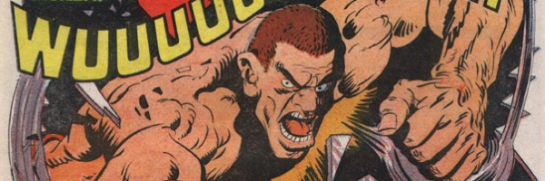

The Bionic Man crossed with 007 (that was M.A.C.H. 1) replaces itself with the Bionic Man crossed with the Hulk: the story of MACH Zero is far less 007 and much more Frankenstein's monster.
Art by Ramon Sola
| Story Title | Parts | Pages | w indicates a wraparound coverCovers | Year(s) | Issues | Writer | Artist | Colourist | Letterer |
|---|---|---|---|---|---|---|---|---|---|
From M.A.C.H.1[M.A.C.H. Zero] | 4 | 22 | 0 | 1977-1978 | Reprints: X943-46 | Steve MacManus | Ramon Sola | [b&w] | Tom Frame: 1 Jack Potter: 2‑4 various |
Part 5 listed as part 6.[Cousin George] | 8 | 40 | 65: Ramon Sola 67: Brian Bolland2 | 1978 | 65-72 | Steve MacManus: 1‑4 Geoffrey Miller: 5‑8 various | Ramon Sola: 1, 3, 5 Mike Dorey: 2, 4, 6‑8 various | [b&w] | Jack Potter: 1, 4 Steve Potter: 2, 5‑6 John Aldrich: 3 Bill Nuttall: 7 Tom Frame: 8 various |
| Cyborg Express | 1 | 7 | 0 | 1978 | SFS1 | Roy Preston | Kevin O'Neill | [b&w] | Peter Knight |
| [The Suit] | 3 | 14.5 | 73: Kevin O'Neill 1 | 1978 | 73-75 | Geoffrey Miller | Montero | [b&w] | Jack Potter: 1‑2 John Aldrich: 3 various |
| The Final Days | 4 | 18 | 0 | 1980 | 162-165 | Steve MacManus | Mike Dorey | [b&w] | Tony Jacob |
| >> Text Stories << | |||||||||
Cover story.A Nightmare Comes to Life | 1 | 0.5 | 1 | 1980 | 165 | unknown | Kevin O'Neill | <-- | n/a |
| >> Posters << | |||||||||
Star Pin‑Up.MACH ZERO | 1 | 1 | 0 | 1978 | SFS1 | n/a | Kevin O'Neill | <-- | n/a |
| year | episodes | pages |
| 1977 | 3 | 17 |
| 1978 | 13 | 66.5 |
| 1979 | 0 | 0 |
| 1980 | 4 | 18 |
| 1981 | 0 | 0 |
| 1982 | 0 | 0 |
| 1983 | 0 | 0 |
| 1984 | 0 | 0 |
| 1985 | 0 | 0 |
| 1986 | 0 | 0 |
| 1987 | 0 | 0 |
| 1988 | 0 | 0 |
| 1989 | 0 | 0 |
| 1990 | 0 | 0 |
| 1991 | 0 | 0 |
| 1992 | 0 | 0 |
| 1993 | 0 | 0 |
| 1994 | 0 | 0 |
| 1995 | 0 | 0 |
| 1996 | 0 | 0 |
| 1997 | 0 | 0 |
Comic strip data (excludes other content):